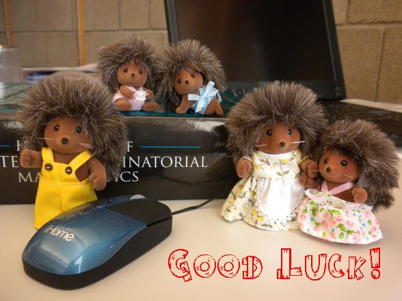

The Hedgehog Fund
Established: October 2010Founder and CEO: Oleg Pikhurko
Hedgehog Consultant: Oksana Trushkevych
PR Officer: John Mackey
Hedgehog Awards
|
|
|
 |
|
Why Hedgehogs?
Thoughtful and careful, hedgehogs have made essential contributions to various areas of mathematics and mathematical physics. Here are some highlights. (See also some hedgehog-inspired creativity by students.)| MR1088326
(92c:83013) Williams,
J.
G. Combed hedgehog
kink metric in (2+1)
dimensions.
Gen. Relativity Gravitation
23
(1991),
no. 2, 181–187. Also, the famous theorem of Poincare from 1885 states that it is impossible to comb a hedgehog. Unfortunately, to the great annoyance of hedgehogs, this prominent result became known under the vulgar name of the Hairy Ball Theorem (uffa!...) so it does not qualify. |
 |
| Pat
Cladis, Liquid
Crystals
and
the
Drunken Hedgehog, Physics World, 5 (1992)
22. Apparently, the LC monitor you
are probably looking at right now can be a home to a whole
universe of hedgehogs:
Hedgehogs Radial and Hyperbolic and less orderly Metastable and Drunken ones... :-) |
|
| MR1218832 (93m:83075) Guendelman, E. I.; Rabinowitz, A. I. Hedgehog compactification. Phys. Rev. D (3) 47 (1993), no. 8, 3474–3475, | |
| MR1696588 (2000d:54033) Simon, Petr A hedgehog in a product. Acta Univ. Carolin. Math. Phys. 39 (1998), no. 1-2, 147–153. | |
| MR1922133
(2003i:54004) Simon,
Petr; Tironi,
Gino No hedgehog
in the product?
Comment. Math. Univ. Carolin.
43
(2002),
no. 2, 349–361. And no product left! :-P |
|
| MR2003552 Cladis, P. E.; Brand, Helmut R. Hedgehog-antihedgehog pair annihilation to a static soliton. Phys. A 326 (2003), no. 3-4, 322–332. | |
| MR2039432 (2004k:83019) Delice, Ozgur Gravitational hedgehog, stringy hedgehog and stringy sphere. J. High Energy Phys. 2003, no. 11, 058, 11 pp. | |
| MR2242680 (2007b:81147) Belavin, V. A.; Chernodub, M. N.; Kozlov, I. E. Hedgehogs in Wilson loops and phase transition in SU(2) Yang-Mills theory. Nuclear Phys. B 748 (2006), no. 3, 524–539. | |
| MR2443582 (2009j:83050) Headrick, Matthew Hedgehog black holes and the Polyakov loop at strong coupling. Phys. Rev. D 77 (2008), no. 10, 105017, 13 pp. | |
| MR2477418 (2010b:37136) Childers, Douglas K. Are there critical points on the boundaries of mother hedgehogs? Holomorphic dynamics and renormalization, 75–87, Fields Inst. Commun., 53, Amer. Math. Soc., Providence, RI, 2008. | |
| MR2465597 (2010e:37061) Biswas, Kingshook Hedgehogs of Hausdorff dimension one. Ergodic Theory Dynam. Systems 28 (2008), no. 6, 1713–1727. | |
| Hyperbolic hedgehog steers active droplets in a liquid crystal, a intriguingly titled review in Physics World of this paper in Nature. | |
| The recent discovery was warmly received by the hedgehog community: David Conlon, Jacob Fox and Vojtech Rodl Hedgehogs are not colour blind, Journal of Combinatorics 8 (2017) 475 - 485 |
